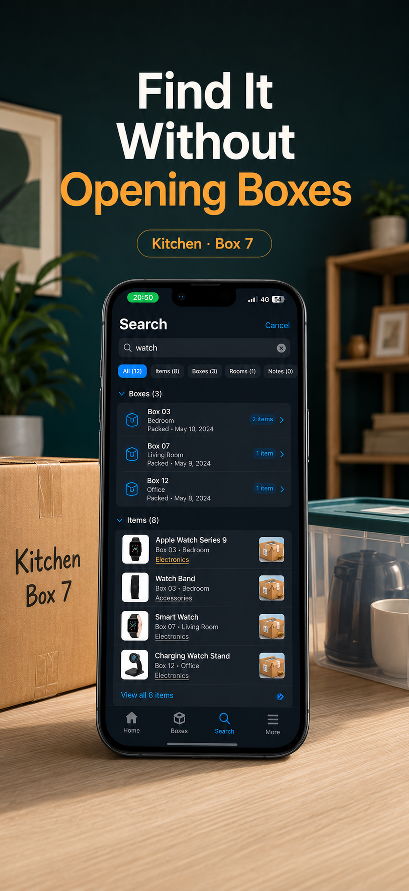
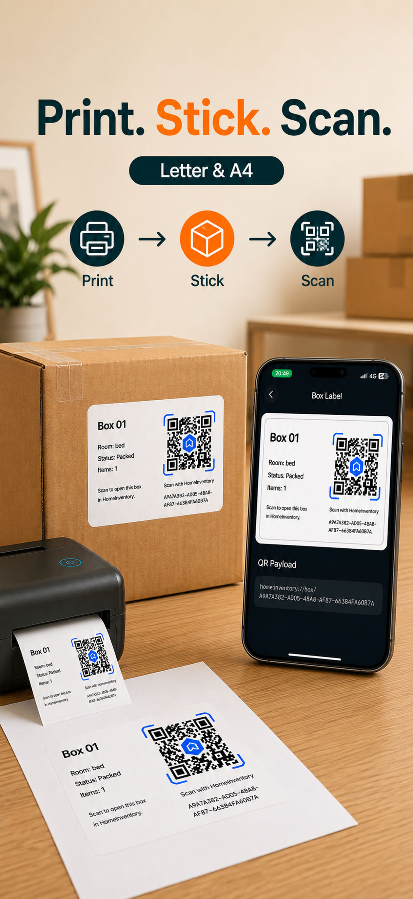

Stop opening the wrong box
How to find an item without opening every box
Search the item name in a box record, check the matching box and room, then open only the box that contains what you need.
Moving Boxes Organizer · App Store ID 6766885651

The problem
“It is packed” is not the same as knowing where it is.
When you need one item before everything is unpacked, a stack of sealed boxes becomes a guessing game. Room labels narrow the search, but several boxes can all say “Kitchen,” “Office,” or “Bedroom.”
- The item may be in the right room but the wrong box is easiest to reach.
- Opening a box disturbs the packing and creates more work if it is not the match.
- Someone else may have packed the item, so your memory cannot solve the search.
What to do
Search first. Open second.
- Search the item name.
Use the word you would naturally look for, such as “coffee maker,” “passport,” or “monitor cable.”
- Check the matching box.
Use its specific name or number to distinguish it from other boxes in the same room.
- Confirm the room and any notes.
A destination room and short description help confirm that you have the right record.
- Open only the correct box.
If you are standing beside the stack, a label linked to the box record can also help you check it before cutting tape.
How Moving Boxes Organizer helps
The search result leads back to a real box.

Where it fits
For sealed household boxes, not business inventory.
Use this approach anywhere you store personal belongings in boxes and may need one thing before the rest. It is not intended for warehouse operations or company stock control.
- Moving boxes
- Storage bins
- Garage shelves
- Closets
- Seasonal items
Find the record before opening the box.
Moving Boxes Organizer · App Store ID 6766885651